Kurucu Hekim
Op. Dt. Yiğit Ozan Yılmazer
Ağız, Diş ve Çene Cerrahisi Uzmanı. İmplantoloji ve gülüş tasarımı alanında 15 yılı aşkın deneyime sahiptir.
Yiğit Ozan Yılmazer Diş Kliniği olarak implanttan gülüş tasarımına, ortodontiden zirkonyum kaplamaya kadar tüm tedavilerinizi son teknoloji cihazlar ve steril klinik ortamında, uzman hekim kadromuzla güvenle uyguluyoruz.
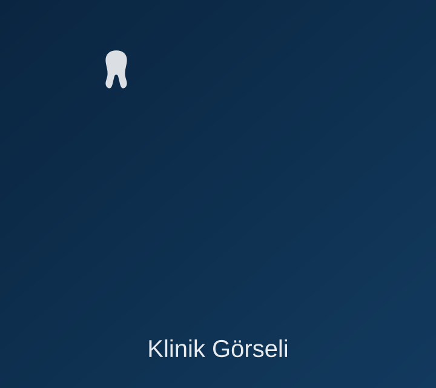
Yiğit Ozan Yılmazer Diş Kliniği, 2010 yılından bu yana hasta odaklı yaklaşımı, şeffaf tedavi süreçleri ve ileri teknoloji cihazlarıyla ağız ve diş sağlığı alanında güvenilir bir merkez olmayı sürdürüyor. Amacımız her hastamıza kendi ailemize gösterdiğimiz özeni sunmak.
Alanında deneyimli hekim ve asistan ekibi
WhatsApp üzerinden dakikalar içinde randevu
Uluslararası standartlarda sterilizasyon
Şeffaf tedavi planı ve fiyatlandırma
Alanında uzman ve deneyimli hekimlerimizle tanışın.
Ağız, Diş ve Çene Cerrahisi Uzmanı. İmplantoloji ve gülüş tasarımı alanında 15 yılı aşkın deneyime sahiptir.
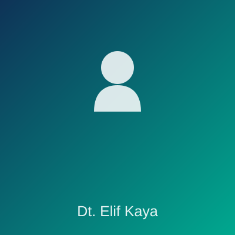
Zirkonyum kaplama ve gülüş tasarımı konusunda uzmanlaşmış, detaycı bir tedavi yaklaşımı sunar.
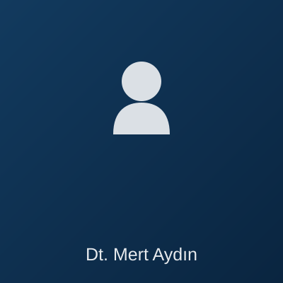
Şeffaf plak ve diş teli tedavileri konusunda geniş vaka deneyimine sahip ortodonti uzmanıdır.
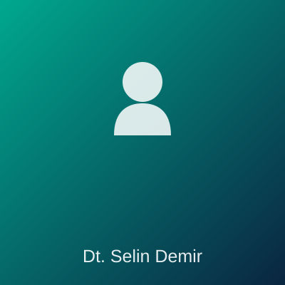
Çocuklarda diş sağlığı ve koruyucu diş hekimliği alanında şefkatli bir yaklaşım sergiler.
Detaylarını görmek için kartlara tıklayın.
Eksik dişleriniz için doğal görünümlü, uzun ömürlü kalıcı çözümler.
Kompozit bonding ve laminate veneer ile kusursuz bir gülüş.
Doğal diş görünümüne en yakın, dayanıklı ve estetik kaplama seçeneği.
Dijital gülüş tasarımı (DSG) ile tedavi öncesi sonucu görün.
Şeffaf plak ve klasik diş teli ile diş dizilim tedavileri.
Klinik ortamda güvenli ve etkili profesyonel beyazlatma.
Kaydırıcıyı hareket ettirerek tedavi öncesi ve sonrası farkını inceleyin.
Görseller, hasta mahremiyeti ve sağlık mevzuatına (Sağlık Bakanlığı reklam yönetmeliği) uygun şekilde temsili olarak hazırlanmıştır. Gerçek hasta fotoğrafları yalnızca yazılı onam alınarak kullanılır.
Ön bölge dişlerde estetik bütünlük için tam seramik zirkonyum kaplama uygulaması.
Eksik azı dişi bölgesine uygulanan tek parça implant ile fonksiyon ve estetiğin geri kazanımı.
Tek seanslık klinik beyazlatma uygulaması ile 6 ton daha parlak bir gülüş.
Hijyenik ve modern klinik ortamımızı keşfedin.
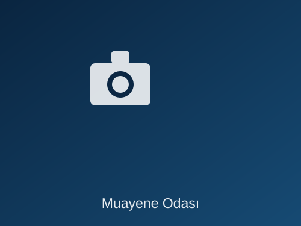
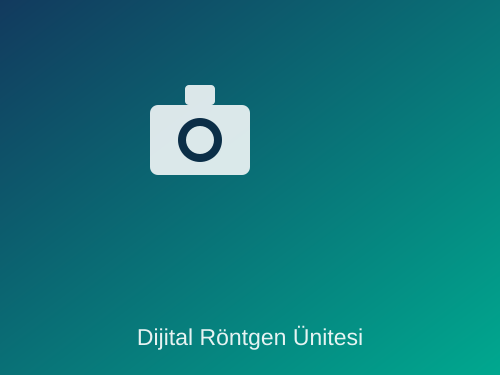
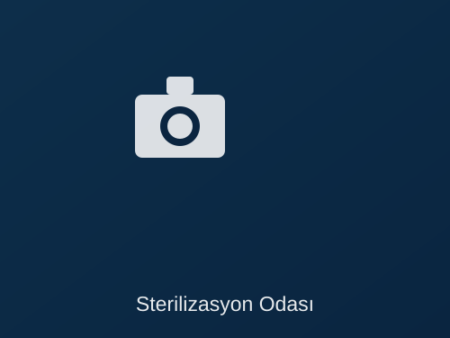
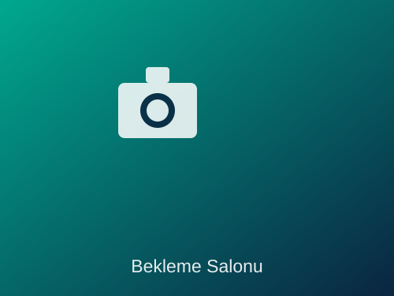
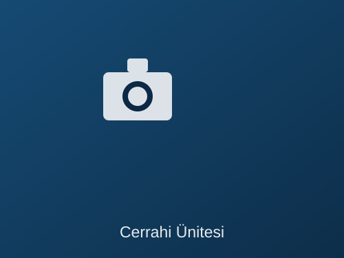
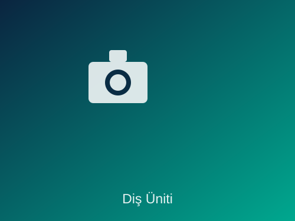
Google ve sosyal medya üzerinden aldığımız gerçek hasta değerlendirmeleri.
"İmplant tedavim için geldiğim klinikte gerçekten çok profesyonel bir ekip ile karşılaştım. Süreç baştan sona şeffaftı."
"Gülüş tasarımı öncesi dijital simülasyonu görmek karar vermemi çok kolaylaştırdı. Sonuçtan çok memnunum."
"Çocuğumun diş tedavisi için geldik, ekip çok sabırlı ve ilgiliydi. Kesinlikle tavsiye ederim."
"Zirkonyum kaplama sonrası dişlerim tamamen doğal görünüyor. Randevu süreci WhatsApp üzerinden çok pratikti."
"Ortodonti tedavim bir yıl sürdü ve her randevuda ilgiyle karşılandım. Sonuç harika oldu."
"Diş beyazlatma sonrası inanılmaz bir fark oldu, hiç hassasiyet yaşamadım. Teşekkürler klinik ekibi."
Aradığınız cevabı bulamadıysanız bize WhatsApp üzerinden ulaşabilirsiniz.
İmplant tedavi süresi kemik yapısına ve tedavi planına göre değişmekle birlikte, implantın kemikle kaynaşması (osseointegrasyon) genellikle 2-4 ay sürer. Uygun vakalarda aynı seansta geçici diş de uygulanabilir.
Klinik ortamda hekim kontrolünde uygulanan profesyonel beyazlatma, diş minesine zarar vermez. Diş eti koruyucu jel kullanılarak işlem güvenli hale getirilir; işlem sonrası geçici hassasiyet birkaç gün içinde geçer.
Zirkonyum kaplamalar metal alt yapı içermez, bu sayede diş eti kenarında gri gölgelenme oluşmaz ve alerjik reaksiyon riski taşımaz. Ayrıca ışık geçirgenliği daha yüksek olduğundan doğal diş görünümüne daha yakındır.
Şeffaf plak tedavisi hafif ve orta seviye diş dizilim bozukluklarında oldukça etkilidir. Karmaşık vakalarda hekimimiz klasik braket tedavisini önerebilir. Kesin karar için klinik muayene gereklidir.
İlk muayene ve tedavi planlaması görüşmesi ücretsizdir. Röntgen ve ileri tetkik gerektiren durumlarda hekimimiz sizi bilgilendirerek onayınız sonrası işlem yapar.
Sayfanın üstündeki veya sağ altındaki WhatsApp butonuna tıklayarak saniyeler içinde randevu talebinde bulunabilir, dilerseniz 0543 410 14 77 numaramızdan bizi arayabilirsiniz.
Diş sağlığınız için güncel bilgiler ve öneriler.
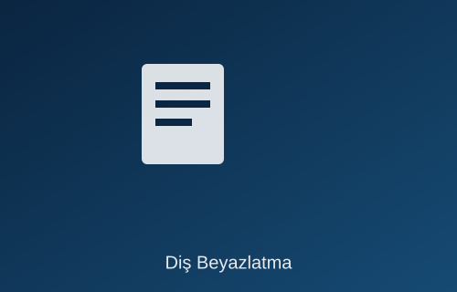
Profesyonel beyazlatma yöntemleri, süreç ve işlem sonrası dikkat edilmesi gerekenler hakkında merak edilenler.
Devamını Oku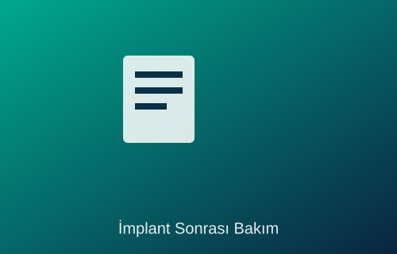
İmplant tedavisi sonrası iyileşme sürecini hızlandıracak beslenme ve bakım önerileri.
Devamını Oku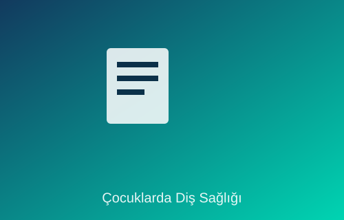
Çocuklarınızın süt dişlerini ve kalıcı dişlerini sağlıklı tutmak için ebeveynlere pratik öneriler.
Devamını OkuSorularınız için arayabilir veya WhatsApp üzerinden hızlıca yazabilirsiniz.
Caferağa Mahallesi, Sağlık Caddesi No:12, Kat:2, Kadıköy / İstanbul
| Hafta İçi (Pazartesi - Cuma) | 09:00 - 19:00 |
| Cumartesi | 10:00 - 16:00 |
| Pazar | Sadece Acil Randevu |
Tek tıkla WhatsApp üzerinden bize ulaşın, size en yakın zamanda dönüş yapalım.
WhatsApp'tan Yaz